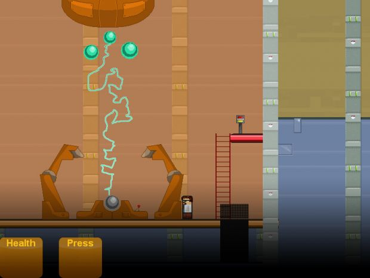

Guys! Guys. Guys.
I’ve got it.
A great idea for a reimagining/reboot of Half Life.
Get ready for it.
It’s too awesome for words.
Wait for it.
Card battle.

Guys! Guys. Guys.
I’ve got it.
A great idea for a reimagining/reboot of Half Life.
Get ready for it.
It’s too awesome for words.
Wait for it.
Card battle.
Ivan The Space Biker better be a wild card.
I was thinking of having Dr. Magnusson’s Casserole as the wild card…
What about call of half-life? same great story as call of duty and half life graphics!!! would be awesome! and the weapons of halo would then be a DLC
I feel like a geek knowing who IG-88 is.
Better yet, half life will start with the inbound chapters as normal, but instead of getting the HEV suit, Gordon instead opens his laptop and learns about the BlackMesa forum and battles through hordes of trolls before getting fired from his job because he failed to show up for work again.
I would say keeping everything mostly the same, but removing the vortigaunts until midway through or later on in the game, at which point you actually get to see the beginning of the Combine takeover (And that’s when the Vorts would show up). There’d be a portion of the game talking about how some vastly superior technology is hacking into the Resonance Cascade and using it to come through to Earth and whatnot. The scientists would try to send you to the Combine Homeworld instead of Xen, but in mid-jump the G-Man interrupts time, informs you that you have been labeled an asset to his goals, and reconfigures the portal to send you to Xen instead to kill the Nihilanth so that the events of HL2 can take place.
I dunno. That might be fun.
Augh! This threads ideas are too good, it’s making me wish Black Mesa would incorporate major changes. Its just gonna make Black Mesa seem less impressive! :fffuuu:
Just kidding of course keep up the cool thoughts. 
Idea: make all battles turn based
If I were to re-imagine the Half Life series, I would basically get rid of the original Half Life and jump to the second. I would also change the genre and style.
The Combine invasion is the entire premise of the game. You would be a normal person and would have to escape the Seven Hours War and seek refuge for the first game. The second game would be about City 17 and the resistance – City 17 would be brutally dark and really fucked up, like the Half Life 2 beta. The final game would be about aspiration to the Combine’s demise and revelations. The gameplay would be of the problem solving-style in which you alone don’t stand much a chance against anything. The game itself would be psychological and disturbing, revolving around dark revelations of pain and fear.
The Combine would be much more advanced; they would range from tripod-synthetic-bugs, like Striders, to giant planet-consuming-whale-creatures soldered with mechanics.
At the climax of the game, you would travel floor by floor of the citadel to the top. No one would attack you because the citadel was falling apart. Each level up you realize more and more of how backwards the war is. You would realize that being against the Combine, simply because they’re against you, is foolish. You would realize that you’re a slave to Neurological Presets and that the Combine is the most desperate and advanced attempt to escape natural control of all time. Then, you would stand on the roof and watch as it all crumbles away because of primitive and violent humans, such as yourself. Then you would sit in despair as you fell with the citadel and the last chance at self-designed life.
Deep. :freeman:
yeh very - kinda loved it actually.
but being dumb consumers 2.4% of the community would understand your concept. because 97.6% of the consumers were adolescent teens who see facebook as a representation of art.
I could see Gman releasing Shep to pave the way for Gordon.
Alas, it did not happen. Instead, we almost got that beer…
Well, there is always this:

I don’t have a great deal of ideas about Half Life, but I do have a few about Half Life 2.
1. More synth enemies. I hate how you see the crab synth and other types in the Citadel, but never get to fight them. You know how the Combine “turned the street over to striders” when the rebels were getting close to the Citadel? Well, there should have been other synths too. In Nova Prospekt, Dr. Breen talks about the Combine starting to doubt the transhuman forces of the Combine Overwatch, and so it would make sense for the Combine to start to lose faith in them during the Uprising and use more synths. You see this in a way, when the Combine attempts to destroy the Resistance rocket in Episode 2, using strictly striders and hunters.
2. Adjusted Combine weaponry. The SMG is completely useless - inaccurate and low-damage, and it doesn’t make sense for the Combine to use an MP7 meant for penetrating Kevlar against unarmored citizens. I would remove it entirely, and have Civil Protection use the shotgun instead, without the ridiculous “fire both barrels” feature - there’s only one barrel, the tube below it holds the shells, Valve. Finally, I’d give the Combine soldiers more firepower by adding some kind of LMG pulse rifle. I’d want the player to use discretion when choosing to engage or evade Combine forces alone (such as in the levels in the Scout Car), make traps, use guerrilla tactics, and make effective use of cover, or otherwise be filled full of holes. :fffuuu:
3. Different Rebel weaponry. I absolutely loved the availability of non-Combine and makeshift weapons, such as the .357 revolver, the crossbow, and of course Freeman’s crowbar. I’d add the AK47, with semi automatic and fully automatic fire modes, to be used by the Resistance militias during the Uprising - because it’s not a proper uprising without AK47s, right?
4. The Gravity Gun… I’m not sure how to put this. I know I may catch a lot of flak for this, but I’m not sure I would have included it in Half Life 2, were it my decision. Although it is definitely tons of fun and adds an interesting mechanic, I think like Valve added it mostly to show off their physics in the game. I feel like it makes the game a little bit too easy and cheap, with the ability to just smash anybody and anything with various explosive barrels/propane tanks, as well as easily open crates and break wooden boards. In my humble opinion, it devalues the other weapons and tools in the game, including Gordon’s iconic crowbar, which is a real shame. :freeman:
Well, that turned out to be a big post!
I agree with most of that, but I believe that there should be more Combine all together.
I mean, how the fuck did Earth’s entire military lose to the Combine in a mere 7 hours, but some rag-tag rebels with no real armor or training take over city 17? Don’t tell me Earth was “unprepared” either – that doesn’t make any sense. If the Earth was getting hit with portal storms and Xen life for 10 years prior to Half-Life 2, then their would definitely be a surplus of military bases what with the normal bases scattered around the planet.
Some may argue that Gordon Freeman did all that, but, I played him… we all did.
We really didn’t do that much – I could count the amount of Striders killed in Half-Life 2 on my left hand.
Gordon helped the Civilians for a while and got taken to Breen like an idiot. Basically you just fumbled around for the whole game until you killed Breen, which pissed off the Advisors and made all the Combine even MORE bent on eradicated the human species. Hell, Breen was beneficial – he never did anything wrong. The Combine would have killed everyone if it wasn’t for him. And what did Gordon do in the face of that? Kill him!
Honestly, I root for the Combine in Half-Life.
On another note, there weren’t even any human Combine Soldiers in the 7 hours war, and if striders can barely withstand rockets, what would a few tanks do? A lot, I’d say. This all leads me to believe there was some kind of greater military force that took out Earth; one that must have left for another conquering.
But, if that’s true, than that means Gordon’s defeat of the Citadel means very little. Gordon has barely taken back one city in a hundred, on a planet out of a thousand. In the last 3 Half Life games we have barely even dented the Combine. But somehow there is only one more game left.
In Half Life, we managed to kill the alien dictator who was planning to swarm Earth.
In the 3 following titles, we jerked off our cock in the Combine’s face and said, “fucking kill me” just after we started to get along.
The only logical direction for the game to take, is to have the loss of City 17 be in the Combine’s plans. Probably to show how useless humans are to Dr. Breen before sending him to Xen. But he died, Advisors died, and Eli died. What the fuck is everyone waiting for?!
Where is the killswitch on the “Earth is useful” button and why hasn’t the Combine pressed it?
Instead they stayed on Earth and sucked Eli’s brain out of his head.
Marc Laidlaw is an awesome writer, but I wish he would be more forthcoming with this sort of thing.
Those are some good points, though I’m opposite of you - I always root for the rebels. :rolleyes: And if you wanna get philosophical about it, I’d say there’s a lot more dignity in an entire race going out fighting than becoming enslaved. :freeman:
I guess one could write it off as the Combine being stretched thin - it is a “universal union” according to Dr. Breen. It was also in the early stages of attempting to incorporate humans into its military forces, which is why it didn’t wipe humanity out. That’s basically what synths are - altered/evolutionarily engineered/cybernetic alien species, no? The Combine troops are the first prototypes in human-based synths.
In short, the Combine is HUGE, its experimenting with Earth, and if it loses the planet, its not the end of the world for a universal empire.
Fair enough;
If you found out the reason that the laws of physics are in place; the reason that neurological imperatives exist; the reason that Physiological requisites are to be met; is all because of some supreme slavery of human beings from an unknown controller, your next mode of action would be to what?
I think previous discussions about that have led to the assumption that the combine forces we fight in the game are not the actual invasion force involved in the seven hour war, but only an occupation force, not meant to face any real resistance.
Actually, Freeman does two important actions, pissing off the combine aside:
-he makes Nova Prospect fall, which is nothing in term of military loss but is very symbolic and has convinced city 17 to uprise.
-he prevents the citadel from blowing up right in the beginning of episode 1, hampering the combine call for backup. This backup must be the combine invasion force that could completely nuke the rebels in a matter of minutes (remember what Eli said: “It’s gonna be the 7 hour war all over again, except it will take 7 minutes”).
I agree that Breen probably came up with good intents in the first place, but I don’t think he’s a good guy either. If I’m not mistaken, the civil protection force is under Breen control as it’s composed of humans, not synth. But the CP behave like utter brutes against the civilians, randomly arresting or killing them. So, Breen has at least been carried away by his power. In fact, Breen is a lot like Petain in France during the WWII (If I may draw a parallele without getting a godwin point). When the germans invaded, they were clearly winning and Petain, seeing that fighting was useless, made the France surrender, claiming that the only way to avoid the worst was collaboration and that France had to join the Nazi “Great Europe” (doesn’t that recalls you the combine Universal Union?). Then he became the ruler of an authoritarian regime (a puppet of germany), better than the Nazi occupation but still fascist. And he planned the deportation of french jews, without direct order from germans. Eventually his regime degenerated into a brutal militia regime hardly better than the nazi one itself. So… still convinced that Breen was a good guy?
I think the goal of the human resistance is not to defeat the combine empire (which would be impossible), but just to prevent the combine from reaching the Earth. If I’m not mistaken, the combine empire is from “another dimension”, which means, i guess, that their only way to reach Earth is the “interdimensional portal” technology, a technology they don’t know well. So, if Gordon managed to prevent any combine earth force from using this portal technology (that’s probably the point of reaching the borealis, perhaps the only place, aside the defunct city 17 citadel, containing this technology), earth would be saved, definitively cut out from the combine empire.
Founded in 2004, Leakfree.org became one of the first online communities dedicated to Valve’s Source engine development. It is more famously known for the formation of Black Mesa: Source under the 'Leakfree Modification Team' handle in September 2004.